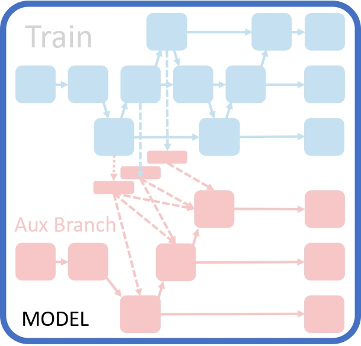
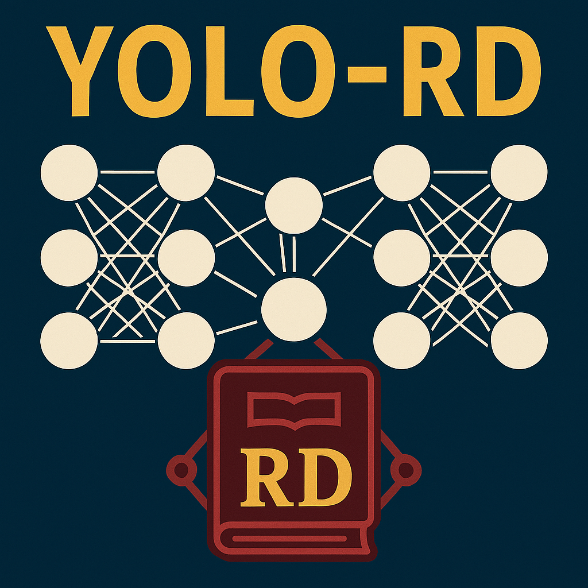

PGI combines Reversible Branches and Deep Supervision to provide accurate gradients. It introduces auxiliary branches that shorten paths or reuse inputs, improving information retention and gradient precision. Unlike traditional Deep Supervision, PGI works with small models and allows removable branches during inference, enhancing speed without sacrificing performance.

YOLO-RD, a module provides visual model 'dataset information' through Retriever Dictionary.

@article{wang2024yolov9, author = {Chien-Yao Wang and I-Hau Yeh and Hong-Yuan Mark Liao}, title = {YOLOv9: Learning What You Want to Learn Using Programmable Gradient Information}, journal = {ECCV}, year = {2024}, }@inproceedings{tsui2024yolord, author={Tsui, Hao-Tang and Wang, Chien-Yao and Liao, Hong-Yuan Mark}, title={YOLO-RD: Introducing Relevant and Compact Explicit Knowledge to YOLO by Retriever-Dictionary}, booktitle={Proceedings of the International Conference on Learning Representations (ICLR)}, year={2025}, }